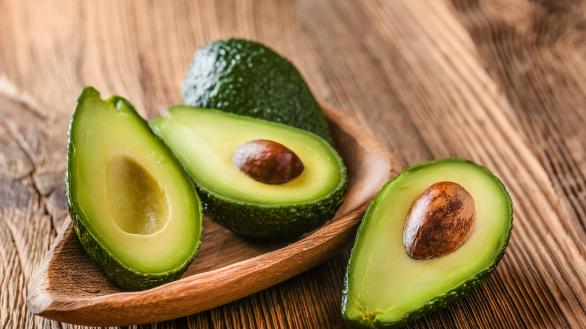

Tabela nutricional do abacate
| Componentes | Quantidade por 100g de abacate |
|---|---|
| Energia | 114 calorias |
| Proteínas | 1,1 g |
| Carboidratos | 2,3 g |
| Gorduras totais | 10,5 g |
| Gorduras monoinsaturadas | 6,5 g |
| Gorduras poli-insaturadas | 1,2 g |
| Ácido linoleico | 1,1 g |
| Gorduras saturadas | 2,2 g |
| Fibras | 3 g |
| Vitamina C | 3 mg |
| Vitamina A | 5 mg |
| Vitamina E | 2,1 mg |
| Vitamina B1 | 0,1 mg |
| Vitamina B2 | 0,17 mg |
| Vitamina B3 | 1,1 mg |
| Vitamina B6 | 0,3 mg |
| Folatos | 11 mcg |
| Potássio | 330 mg |
| Fósforo | 36 mg |
| Cálcio | 4 mg |
| Magnésio | 21 mg |
| Ferro | 0,3 mg |
Para garantir os benefícios do abacate, é importante que seja incluído em uma alimentação saudável e balanceada.